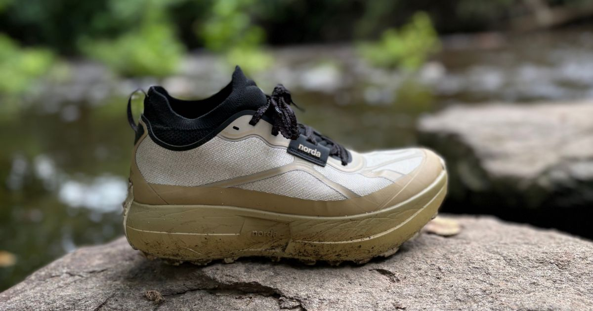
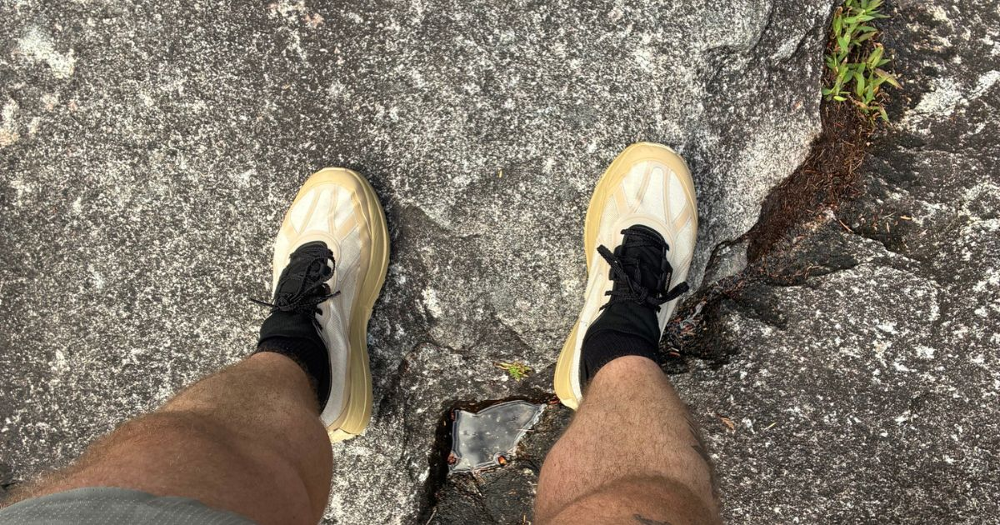

norda has been taking the trail world by storm over the past few years with instant successes like the 001, the 002, and the most recent 005. Crafted with the best materials on the market and designed with precision and an appreciation for beautiful silhouettes, the 055 fits right in as the brand's new all-mountain crusher. When Rachel Entrekin became the first-place overall winner of the 2026 Cocodona 250-miler, the 055 was her vessel of choice across the historic finish line. norda has been a longtime favorite for both Cody and Ryan, so they took this new workhorse into the wild for some gritty miles.

Miles Tested
The Good
Cody
I've been waiting for norda to release a true max-cushion trail shoe while keeping everything that makes the brand special: incredible durability, an unbeatable lockdown, and an upper that feels nearly indestructible. Thankfully, the norda 055 delivers.
The standout feature is the midsole. The foam provides a plush, comfortable ride without ever feeling dull, making long days on the trail noticeably easier on the legs. This is easily the softest and most forgiving shoe norda has produced, and I found myself enjoying every mile in it.
I was also happy to see that norda didn't compromise on the upper. You still get the incredibly durable woven upper that locks your foot in place better than almost anything else on the market. It inspires confidence whether you're climbing, descending, or spending hours on your feet.
Overall, the ride is smooth, protective, and exactly what I wanted from a max-cushion norda.
Ryan
Oh norda, sweet norda. You've done it again. You're like a Billboard chart-topping artist that just can't seem to release a bad album. The 055 absolutely vibes and is ready to hang with the best of the best.
I have so much good to say about this shoe, but at the top of the list is the Arnitel TPEE midsole. Making its debut in the 005, the Arnitel midsole has become my all-time favorite midsole ever released. That's a bold claim, but I stand by it. It's durable, lightweight, and incredibly responsive.
The 055 gives you even more of that incredible midsole, but don't expect it to feel exactly like the 005. It's slightly denser and maybe even a little bouncier while still maintaining the familiar characteristics I loved. I took this shoe onto technical terrain, rocky trails, and some incredibly fun gravel service roads, and this midsole absolutely shines. It cruises effortlessly and left my feet feeling fresh after every run.
Another thing I love is the versatility. I was a little nervous when I kept hearing the phrase "all-mountain." I pictured something designed only for races like Hardrock or extremely rugged alpine terrain. Instead, I mixed in several of my signature road-to-trail runs, and the 055 handled everything with ease. Roads, gravel, singletrack, rocky trails, rooted trails—it never felt out of place.
One thing I have to mention is the weight, and you'll notice I'm talking about it in the good section. On paper, it looks a little heavy, but once you're running, you completely forget about it. The shoe simply disappears on foot.
Finally, the upper is phenomenal. The lockdown is excellent, the Dyneema upper is built to survive an apocalypse, and it's incredibly comfortable. I'd describe the upper as somewhere between the 001 and the 005. It isn't quite as soft as the 005, but it's also nowhere near as rigid as the 001. I had zero lockdown issues and wore my usual norda sizing, which is a half size up from my normal size.

The Bad
Cody
Let's address the elephant in the room: $325. Are you kidding me? That's the kind of price that makes you question whether you really need both kidneys—or if your kid actually needs a college fund.
The other area that surprised me was the terrain limitations. norda markets the 055 as an "all-mountain" shoe, but I didn't love it on highly technical trails. On road-to-trail routes, buffed-out singletrack, gravel, and moderately technical terrain, it performs extremely well. Once I got into truly gnarly, rocky sections, though, I found myself hiking more than I expected.
Part of that comes from the amount of foam underfoot. You sit on top of the midsole rather than sinking into it, so while the shoe is incredibly comfortable, it doesn't offer the same naturally planted feeling as some lower-profile trail shoes. For probably 80% of runners and trails, this won't be an issue, but it's something worth considering before buying.
Ryan
I've had a couple of years to get familiar with norda's approach to heel construction. My hopes were high with the 055 since norda moved to a softer, more traditional heel design. Unfortunately, I still experienced some heel rubbing, especially during steep power hikes. I've been able to solve it with thicker socks or by taping my heels beforehand, but it's still surprising that I continue to run into this issue.
The other thing worth mentioning is stability. For the majority of my runs, especially on climbs and flatter technical terrain, the 055 felt fantastic. But when I started pushing the pace downhill on rocky terrain, I felt slightly less confident with my footing because of the taller stack. On paper, the shoe is listed at 36 mm in the heel, but it honestly feels taller than that while running.
One last small note is the fit. Compared to the 005, the toe box feels slightly narrower. I wouldn't call it narrow by any means, but the forefoot is a little more dialed in. The midfoot and heel felt very similar.
The Verdict
Cody
I absolutely hate the price, but I also understand it.
norda has built a reputation for making shoes that simply refuse to wear out, and if history is any indication, the 055 should easily deliver 700+ miles of trail running. When you factor in that level of durability, the price starts to make a little more sense.
More importantly, this is the shoe I've wanted norda to make for years. It combines the brand's legendary upper with a genuinely comfortable max-cushion platform that's built for all-day adventures.
After 29.5 miles of testing, the norda 055 is my favorite trail shoe of 2026 so far. I'm just happy we finally have a max-cushion norda.
Ryan
The 055 is an absolute certified banger.
norda has done it again. There's something special about the care and craftsmanship they put into every product they release. From the premium upper to what is now my favorite version of the Arnitel TPEE midsole, the 055 delivers an incredible running experience.
This has quickly become one of my favorite trail shoes of 2026. After 40 miles, I'm already excited to keep running in it throughout the rest of the summer and well into winter. norda is known for building products that last, so now the only question is how many miles I can squeeze out of this pair before I finally have to retire them.
Worth The Price?
Cody
Yes—even if it hurts.
$325 is a massive investment, but norda has consistently proven that its shoes go the distance. If the 055 delivers the same durability we've come to expect, you're getting a shoe that can comfortably last 700+ miles.
If you're looking for the absolute best value, this isn't it. But if you're looking for one of the most premium, durable, and comfortable trail shoes available today, the norda 055 earns its price tag.
Ryan
The norda 055 comes with a hefty $325 price tag, and I want to acknowledge that upfront.
Sometimes it's easy to look at reviewers and think, "Well, of course you like it—you didn't have to buy it." But throughout my running journey, I've personally paid out of pocket for several norda shoes, ranging from $280 to $325.
Without hesitation, I think the 055 is worth every penny. You're likely getting 600 to 800 miles out of a shoe built with premium materials from top to bottom. The Dyneema upper simply refuses to quit, meaning it'll almost certainly be the midsole—not the upper—that determines when the shoe is finally retired.
Even then, I expect this version of the Arnitel TPEE foam to last even longer than what we saw in the 005. It's slightly denser, feels more durable underfoot, and gives me confidence that this shoe will stay in my rotation for a very long time.
Buy If
- You want a max-cushioned trail shoe built for long days and high mileage.
- You value a durable Dyneema upper and secure lockdown.
- You run a mix of road, gravel, buffed-out trail, and moderate technical terrain.
- You are willing to pay more for premium materials and long-term durability.
Skip If
- You want a low-profile shoe for aggressive technical descents.
- You are sensitive to tall stack heights or need maximum lateral stability.
- You have had heel-rubbing issues in previous norda models.
- Your priority is finding the lowest-cost trail shoe.
Disclosure
Disclosure: This product was provided by the manufacturer for review. As always, they had no input into our testing, opinions, or final verdict.